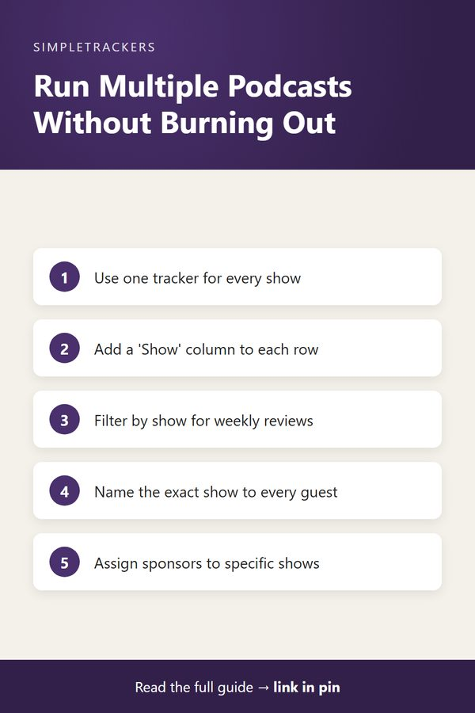

Managing Multiple Podcast Shows Without Burning Out
← Back to the Complete Podcast Production Guide

Key takeaways
- One tracker, not three: keep every show in a single tracker with a "Show" column.
- Two views: filter by show to focus on one pipeline; view all shows together to manage capacity.
- Name the show every time: in guest confirmations and sponsor deals, so nobody preps for the wrong show or pays for the wrong audience.
- Count your load: a unified view shows when "a couple of shows" is really 8-10 recordings a month.
Running one podcast is manageable. Running two is double the work, but many successful creators do it. Running three or more becomes impossible without systematic tracking.
The problem isn't the content creation itself. It's keeping track of who's appearing on which show, when each show records, which deadlines belong to which podcast, and which sponsorship deals are tied to which audience.
Podcasters often drift into running multiple shows organically. You launch your main show and it gets an audience. Listeners ask for a bonus spin-off, so you launch that. Then you get invited to co-host someone else's show. Suddenly you're managing three separate publication schedules, guest pipelines, and production timelines. Without organization, the workload explodes and quality drops.
The Multi-Show Challenge
Each show has its own requirements:
| Show | Schedule |
|---|---|
| Show A | Weekly, Mondays |
| Show B | Bi-weekly, Thursdays |
| Show C | Guest co-hosting project with a chaotic monthly schedule |
Each show also has different guests, different sponsorships, and different recording formats. If you track everything in separate spreadsheets, or worse, in scattered email, you spend half your time context-switching and remembering which details belong to which show.
Guests get confused
You tell a guest they're recording on Tuesday at 2pm, but forget to specify which show. They show up prepped for Show A when you were scheduling them for Show C. The fallout:
- Email confirmations become novel-length as you clarify "Show A, not the other one."
- Recording sessions start late because of miscommunication.
- Listener trust erodes because episodes aren't consistent across the portfolio.
Sponsors get frustrated
A sponsor gives you $1000 to run ads on "your main show," but "main show" is ambiguous if you're running three. Are they paying for Show A, Show B, or both? When do their ads run?
The cost of the wrong show
If ads run on the wrong show, they reach the wrong audience and get no conversions. The sponsor blames you and doesn't sponsor again.
The Unified Tracking Solution
The solution is a single tracker for all shows, with a column that identifies which show each episode belongs to. Now you can sort by show and see each pipeline independently, or see all shows at once to manage capacity.
View 1: all shows together
| Episode | Show | Records | Publishes |
|---|---|---|---|
| Episode 45 | Show A | Tuesday | Monday next week |
| Episode 10 | Show B | Wednesday | Saturday |
| Episode 2 | Show C | Two weeks out | Unknown |
From this view, you can see Tuesday's recording schedule is locked. Wednesday's open but will get filled. You have capacity for two recordings this week without doubling up on a single day.
View 2: filtered to Show A only
You see Show A's next five episodes, which guests are confirmed, which deadlines are coming up, and which episodes need sponsorship details added. Show A's co-host can view this filtered list without the noise of Shows B and C.
Workflows for Multi-Show Management
- Weekly standup. Monday morning, filter the tracker by show. Spend five minutes each on Show A, Show B, and Show C. You know exactly what's happening across your portfolio and spot conflicts immediately.
- Guest confirmation. When a guest confirms, specify the show. Their email says "Confirmed for Show A, Episode 47, Tuesday at 2pm" instead of ambiguous language. They show up prepped for the right show.
- Recording scheduling. All shows are in one view, so you see which days are booked and never double-book yourself. You also notice imbalances: "Three Show A recordings this month and only one Show C. Let me balance the pipeline."
- Sponsorship management. Record which show(s) each sponsor is paying for. You can see "Show A has Acme for Episodes 40-42" and "Show B has Acme for Episodes 15-17" side by side. Different audiences, separate commitments, clear tracking.
- Publication scheduling. Show A publishes Mondays, Show B Thursdays, Show C monthly. Set publish dates accordingly and work backwards from each deadline. Conflicts are obvious before they happen.

Capacity and Burnout Prevention
Multi-show tracking prevents the most dangerous problem: taking on too much. Without a unified view, you feel like you're doing "a couple shows" when you're actually recording 8-10 episodes a month. You feel exhausted but don't understand why.
With tracking, you see exactly how many recording sessions you're committing to. If it's unsustainable, you spot it and adjust before burning out.
Use the tracker in conversations
You can tell a new guest or sponsor: "I'm running three shows on this schedule. Here's the capacity available." Showing them the tracker proves you're serious and organized. That professionalism leads to better guest matches and higher sponsorship rates.
Scaling Sustainably
The only way to scale to multiple shows sustainably is to stop tracking shows separately and start tracking them together. One unified system prevents context-switching, eliminates confusion, and lets you manage capacity intelligently.
The Podcast Producer & Episode Management Tracker supports this perfectly. Add a "Show" column, filter by show when you need to focus on one, and view all shows together when you're planning capacity. Multi-show management becomes organized instead of chaotic.
If you're running multiple podcasts or thinking about launching a second show, start with proper tracking. Get the Podcast Producer & Episode Management Tracker and manage multiple shows sustainably.